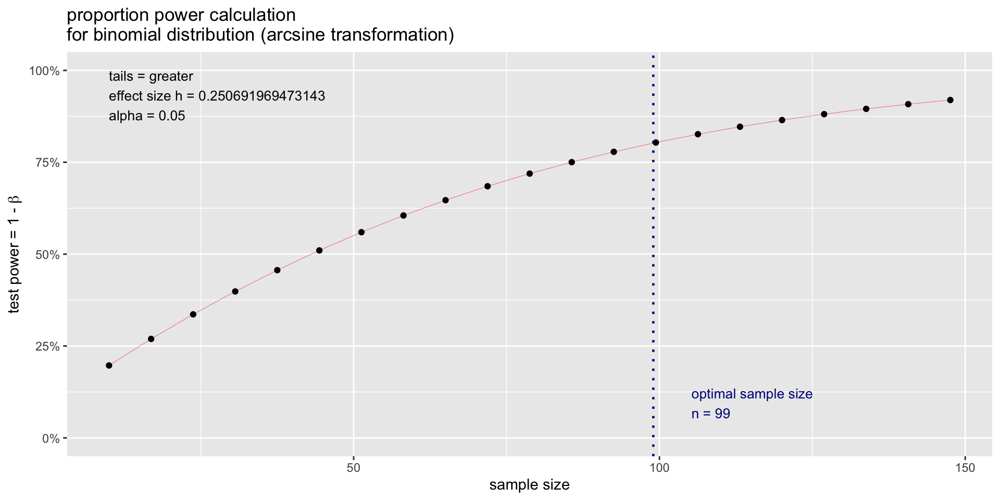
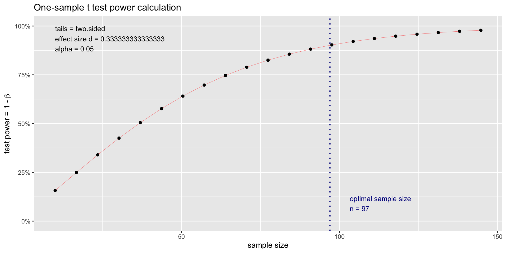

Audit programs can best be thought of as stylized natural experiments.
A natural experiment is an empirical study in which the activities of firms, individuals or groups are exposed to the experimental and control conditions that are determined by nature, or by other factors outside the control of the auditors.
The process governing the exposures resembles a “random” assignment. The concept of “randomness” is itself controversial, and I will briefly comment on this later in the chapter; it is intended to assure that samples are representative for some decision-making objective.
Natural and Field Experiments
Characteristics of Natural Experiments: Observational studies not traditionally controlled; allow causal inference through condition comparisons, unlike non-experimental studies.
Applications: Used when controlled experiments are impractical or unethical, as in fields like epidemiology and economics (Meyer 1995).
Limitations: Related designs like field and quasi-experiments are unsuitable for audit programs.
Natural and Quasi-Experiments in Auditing
Natural experiments rely on an external force (e.g., a government, nonprofit, etc.) controlling the randomization treatment assignment and implementation,
Field experiments require researchers to retain control over randomization and implementation.
Quasi-experiments occur when treatments are administered as-if randomly (e.g., US Congressional districts where candidates win with slim-margins, weather patterns, natural disasters, etc.).
The Role of Randomization in Auditing
The perspective of audits as natural experiments motivates the methods applied to auditing in this book.
It is also the reason that the R language is such an invaluable tool for auditing.
At the core of this concept is the statistical analysis of samples to ultimately render the auditor’s opinion.
Collecting and Analyzing Audit Evidence: Sampling
Sampling in Auditing
A statistical sample is a subset of the population that is, for purposes of analysis, representative of that population.
The population is all of the transactions relevant to a particular audit or procedure.
For example, in confirmation of accounts receivable (A/R) the population is all of the accounts receivable from customers buying on credit for the year (assuming an annual audit).
Audit samples are usually several orders of magnitude smaller than the population.
Sampling units
The sampling base or metric is the unit used to draw the sample.
Monetary unit sampling (one dollar is a sample item) is applied at year end for substantive testing - determining whether the financial statement account balances contain material errors.
Transaction or Record sampling (one accounting transaction is a sample item) is applied at year-end for internal control testing - determining whether the inherent level of transaction processing error risk exists in each accounting cycle.
AICPA Guidelines on audit sampling
Statistical Inference in Auditing
Ideally, samples should be random - the sample should be representative , or every item in the population should have an equal chance of being included in the sample.
In addition, a probability model is required to draw valid inferences - this model may have a significant impact on the choice of sampling method, as does the particular feature being measured.
The more accurately the model and sampling depict reality, the more accurate, and less costly will be the audit inference.
Sampling is performed because it is typically infeasible to make a detailed inspection .
Hypothesis Testing in Auditing
Without sampling, audits would be economically unjustifiable.
In statistical hypothesis testing , the p-value is the probability for a given statistical model that, when the null hypothesis is true the sample mean would be greater than or equal to the actual observed results.
Hypotheses are ways of bifurcating the decision space of a particular statistical inference task.
In auditing, this bifurcation is a stylized accept or do not accept that a transaction stream is in-control (interim tests) or an account balance is fairly stated or is not fairly stated (substantive tests).
Conservatism Principle
Auditing makes decisions on control and fairness through searches for material or intolerable errors.
In an auditing context, the p-value of a test is the probability that the monetary error in the account balance would be intolerable.
One of the auditing’s idiosyncrasies is that audit tests consider only one-sided tests.
Auditing, because of the Conservatism Principal, is concerned with overstating income and assets, or understating liabilities and expenses. As a consequence, all audit tests are one-sided.
Three Sampling methods in Auditing
Discovery Sampling for Interim Tests : Determines sample size to ensure at least one error is detected if the actual error rate exceeds the acceptable level.
Attribute Sampling for Interim Tests : Estimates the error rate in the transaction population with confidence (e.g., 95%) to determine if systems are within acceptable error thresholds. If out of control, it assesses the actual error rate.
Acceptance Sampling for Substantive Tests : Combines discovery and attribute sampling to evaluate internal control effectiveness. If controls are insufficient, attribute sampling estimates the error rate to guide further analysis.
Power Analysis in Auditing
The sample sizes can be determined using Cohen’s power analysis (Cohen 1992) which is implemented in R’s pwr package.
Statistical “power” is the complement (i.e., 1 − \beta) of the probability \beta of a type II error (type II error is the failure to reject a false null hypothesis, and is also known as a “false negative(偽陰性)”.)
Recall that, in statistical hypothesis testing, the probability \alpha of a type I error is the “significance”(有意水準) of the test (a type I error is the rejection of a true null hypothesis, and is also known as a “false positive(偽陽性)”) (Fig. 1).
Calculating Sample Size
To calculate the required sample size, you need to know four things:
The size of the error to detect.
The variance of the response.
The desired significance level.
The desired power.
Sampling for Interim Tests of Compliance
Discovery Sampling
Discovery sampling chooses a sample to determine whether an error rate does not exceed a designated percentage of the population.
If the sample does not contain errors, then the actual error rate is assumed to be lower than the minimum unacceptable rate.
The sampling calculation includes the following factors:
Confidence level.
Minimum unacceptable error rate.
Confidence Level
Confidence level (信頼水準) 1 is a concept that an approach that has fallen out of fashion in favor of frequentist inference, Bayesian inference, and decision theory.
It is still used in decision theoretic approaches such as auditing, and roughly reflects the confidence that the auditor has in a particular decision (e.g., the balance is “fairly stated”).
Confidence is a concept that is intertwined with perceptions of “risk” associated with audit failures.
Unacceptable Error Rates
Unacceptable error rates(許容不能誤謬率) are parameters that are fixed at the start of an audit by the audit manager.
They may be set by the firm, by prior years experience, or by some other method.
In general, their choice is idiosyncratic, determined by policies and perspectives of a particular firm or audit professional.
Uru Model
We can compute the discovery sample size using what mathematicians call an urn model.
Urn models are typically stated as draws of colored balls from an urn.
In our case, we can consider the urn to be the set of all transactions of a given type that the firm processes in a given accounting period.
壺モデル
壺モデルでは、壺にはよく混ぜ合わされたx個の白い球とy個の黒い球とが入っている。
壺から球を1つランダムに取り出し、その色を観察する。
取り出した球を壺に戻し、選択プロセスを繰り返す。
このモデルで次のような問題を考える。
n回の観測で白と黒の球の割合を推測できるか? その推測はどの程度の信頼性があるか?
球をn個だけ取り出したとき、その中に黒い球がない可能性はどれくらいだろうか?
Uru model in Audit
Assume that the auditor determines that the minimum acceptable error rate for a particular transaction type (or alternately our out-of-control rate of error for that transaction type) is p.
The discovery sample size needed for confidence c is
\Pr[x \geq 0] = 1− \Pr[x = 0]
the probability that x, the number of errors discovered, is anything but 0.
Culculating the error rate
We can start by solving the probability of finding no errors in a sample of n draws from the urn:
When auditors consider both the error rate and its stability, interim test sampling must address both the error rate and its variability.
If the out-of-control error rate is \mu_1 and the goal is to detect an error of a given size \Delta with sample standard deviation \sigma, the sample size formula is adjusted accordingly1.
n = \frac{8 CV^2}{PE^2 } \left[ 1 + (1 - PE)^2 \right ]
Determining the Variability of the Population
Sometimes the auditor will not have any idea of the variability of the population, but will still wish to consider it in sample size.
In this case, a variability of \approx 1/3 \approx 35\% is typical. In this case:
n \approx \frac{1 + (1 - PE)^2}{PE^2} \approx \frac{2}{PE^2}
for small error rates.
Rules of Threes to Calculate 95% Upper Confidence Bounds
The rule of threes can be used to address the following type of question: “The manager of the audit has told us that there have been no errors in the A/R account balance in the last 20 audits. Does this information give me an estimate whether there will be an error in this year’s audit of A/R?”
The answer is “yes” . : Given no observed errors in the past n years, a 95% upper bound on the rate of occurrence is 3/n
Observed events Y (no errors in the audit) follow a Poisson(\lambda) distribution based on n samples, per the law of rare errors.
The sum of Poisson random variables
The sum of Poisson random variables is Poisson, so the question of at least one Y not equal to zero is the probability that the sum \sum Y_i is greater than zero.
Let this probability be, for example, 0.95 so that P\left[ \sum Y_i = 0\right ] = \mathrm{e}^{-n \lambda} = 0.05.
Each time a control is tested, the auditor examines the evidence (samples, etc.) to decide on the hypothesis that the account is fairly stated, or internal control is effective.
Each time a control is tested, the auditor examines the evidence (samples, etc.) to decide on the hypothesis that the account is fairly stated, or internal control is effective.
The Risk Assessment Matrix and review of prior years’ audit papers for the control system will provide this rate s.
Hypothesis Test in Attribute Sampling
The control decision takes the form of the following hypothesis test:
H_0: The client’s system is in control, controls are effective, and error rate is approximately s.
H_a: The client’s controls are not effective, and the system is producing an intolerable number of errors > r.
If the expected error rate is s, the intolerable error rate is r, and the control system error rate is \varepsilon, the hypotheses can be stated as:
This requires a one-sample proportion test to calculate power and sample size.
The null hypothesis is \varepsilon = s, and the alternative hypothesis is \varepsilon > r with the standard power and significance assumptions of \alpha = 0.05 and \beta = 0.8.
Let us test a 5\% intolerable error rate r = 0.05 and an expected error rate s = 0.01 (Fig. 3):
proportion power calculation for binomial distribution (arcsine transformation)
h = 0.250692
n = 98.37558
sig.level = 0.05
power = 0.8
alternative = greater
Plot for Power test
# output pwr packagesplot(sample)

Acceptance sampling
The basic idea of calculating power or sample size with the pwr package is to leave out the argument you want to calculate.
If you want to calculate sample size, leave n out of the function.
To calculate power and sample size for one-sample t-tests, we need to set the type argument to one.sample.
Each time an account is audited or a control is tested, the auditor examines the evidence (samples, etc.) to decide on the hypothesis that the account is fairly stated, or internal control is effective.
Case fo Account Balance
The decision takes the form of a hypothesis test. For an account balance, this is:
H_0 : The client’s balance for the account is correct (error is zero)
H_a : The client’s balance for the account contained a material error.
If intolerable error (i.e., the part of materiality allocated to this account) is M and the error in the account balance is \varepsilon then restate this as:
H_0 : \varepsilon = 0 、H_a : \varepsilon = M
Conservatism Principle
In the alternative hypothesis, whether M is Dr or Cr is determined by the Conservatism Principle - the direction that will produce the lowest income.
Let us start with a basic formula for distinguishing between a zero error \mu_0 and the actual error \mu_1 with a one-sided test, a Normal distribution probability model having homogeneous variances \sigma^2_0 = \sigma^2_1 = \sigma^2 and single sample compared to a known (i.e., \mu_0 = 0) distribution.
Rule of Thumb
The “rule of thumb” for sample size is
n = \frac{8}{\Delta^2}
Where the error \Delta we are trying to detect is
For \alpha = 0.05、\beta = 0.20、z_{1-\alpha} = 1.96、z_{1-\beta} = 0.84, the value
2(z_{1 - \alpha } + z_{1-\beta})^2 \approx 8
.
This formula is used to calculate detectable error in the population using a given sample size n is \Delta = \sqrt{\frac{8}{n}}, the inversion of n = \frac{8}{\Delta^2}.
Suppose you are auditing a financial account, and want to compare the actual error in the account to an assumption (null hypothesis) that that account is fairly stated (has zero error).
You will measure the actual expected error \mu_2 with respect to an assumed error of \mu_1, which will typically be zero. We can then define \mu_1 − \mu_2.
The smaller the difference you want to detect, the larger the required sample size.
Of the four variables that go into the sample size calculation, the variance of the responses can be the most difficult to determine.
Usually, before you do your experiment, you do not know what variance to expect.
Investigators often conduct a pilot study to determine the expected variance, or information from a previously published study can be used.
The effect size combines the minimal relevant difference and the variability into one measurement \sigma.
Power test for One-sided Test
1 - \beta, where \beta is the probability of a Type 2 error (failing to reject the null hypothesis when the alternative hypothesis is true). In other words, if you have a 20% chance of failing to detect a real difference, then the power of your test is 0.8, which was suggested in (Cohen 1992) (Fig. 4).
One-sample t test power calculation
n = 96.50801
d = 0.3333333
sig.level = 0.05
power = 0.9
alternative = two.sided
Plot for Power test
plot(sample)

Acceptance Sampling with Poisson Data
Substantive testing often takes a “monetary unit” perspective of error, where each dollar in an account balance is assumed to be a sample-able unit.
With monetary units, data can be assumed to be Poisson distributed, taking on discrete dollar-unit values greater than zero (i.e., being left truncated at zero).
The Poisson distribution has one parameter, the rate \lambda.
P(X = k) = \frac{\lambda^k }{k!} \mathrm{e}^{-\lambda}
Poisson Sampling
The required sample size to detect an error rate of \lambda is
n \approx \frac{4}{\lambda}
This is derived from the previous formula, noting that for a Poisson randome variable Y, the transformed random variable \sqrt{Y} = \mathrm{Normal}(\mu = \sqrt{\lambda}, \sigma ^2 = 0.25).
A Statistical Decision Framework for Auditing
1st Frameworks
A statistical decision framework for making audit decisions restructures these standards around a sequence of tasks:
Objective of Audit Tasks : Audit tasks must ultimately provide the basis for the auditor to make a decision to issue one of the four audit opinions: Unqualified, Qualified, Adverse, or Disclaimer.
2nd Frameworks
True State of the Firm : The audit report is a statement of the auditor’s decision after completing all audit tasks (thus an opinion, because it is not 100% certain) on the unobservable true state of the firm at the audit date; e.g., whether or not there is a material error in the accounts.
Errors stem from GAAP non-compliance, period inconsistencies, and flawed information acquisition.
Investors seek accurate insights into a firm’s true state and rely on auditors to confirm the accuracy of financial reports.
3rd Frameworks
Model : The audit model is captured in the audit program which is a set of procedures that compare an “ideal” accounting of firm operations in compliance with GAAP to the actual procedures that were applied during the accounting period.
The audit program provides a decision model for forming an audit opinion.
Auditors assess risks of material misstatement by understanding the entity, its environment, and internal controls to plan further audit procedures.
4th Frameworks
Evidence : Acquisition of consistent, unbiased, complete, and adequate audit evidence is the major source of cost of an audit.
The auditor must obtain sufficient appropriate audit evidence by performing audit procedures to afford a reasonable basis for an opinion regarding the financial statements under audit.
5th Frameworks
Statistical decision theory : These are mathematical tools that provide widely accepted (and defensible in a court of law) tools to support high quality and defensible audit opinions.
Auditors should be proficient in statistical theory and possess basic programming skills.
Independence and due professional care can be ensured using respected statistical decision models.
Audit decisions may extend beyond statistics, especially with intangible assets and subjective judgments, where objectivity is harder to achieve.
6th Frameworks
Opinion (Audit Decision) : Material error in the audited financial statements exists or does not. Typically this decision requires a pooling of information from supporting decisions (e.g., the existence of tolerable error in individual year-end accounts).
7th Frameworks
Assessment of decision quality: statistical goodness-of-fit statistics determine how confident the auditor is that the opinion is defensible in court.
Audit literature often suggests a 70% confidence level, while statistical norms recommend 95% or higher, a standard introduced by Ronald Fisher.
AICPA and FASB guidance on decision quality can be unclear, with audit adequacy frequently judged in court.
Audit Tests as Learning Model
Audit Tests as Learning Models
Auditing may be seen as a sequence of evidence collection and analyses that help the auditor learn enough to render an opinion. Conceptually, the tests involve a sequence of inferences:
Audit planning will have set the scope and sample size values for audit tasks that, in general, seek to discover (i.e., discovery sampling) whether or not transaction processing is or is not in control.
If errors are discovered in a particular transaction flow, then sufficient additional evidence must be gathered to assess the rate of error occurrences in the transaction flow (i.e., attribute sampling)
Transaction flows with error rates that are sufficiently high to be deemed “out of control” (i.e., intolerable from the audit perspective) are listed on the Internal Control Memo generated at the end of the Interim compliance audit.
Financial statement account balances affected by any transaction flows with error rates that are sufficiently high to be deemed “out of control” will have their sample sizes in the audit program for year-end substantive tests adjusted to assure an accurate assessment of the existence of material error in the audited financial statements.